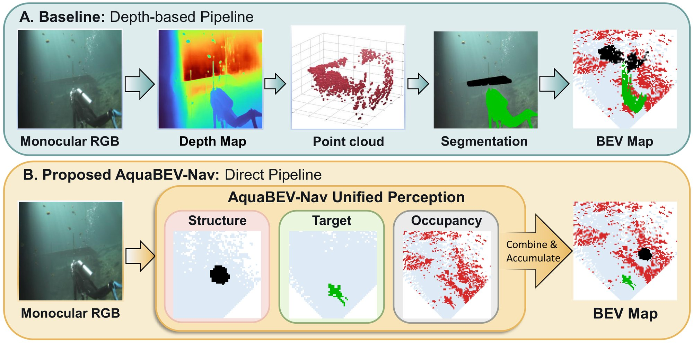
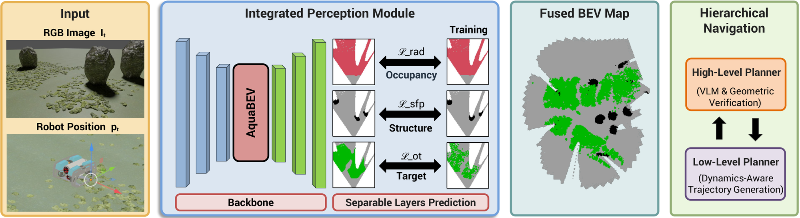
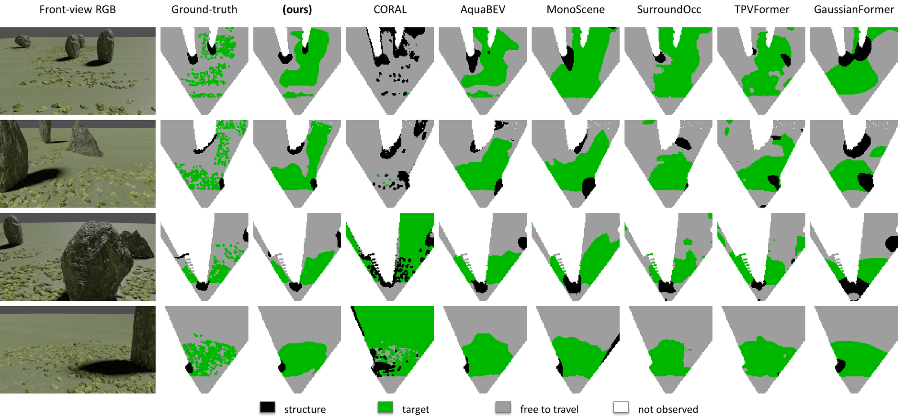
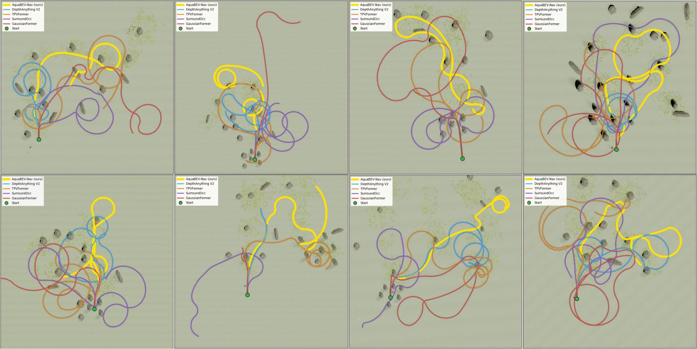
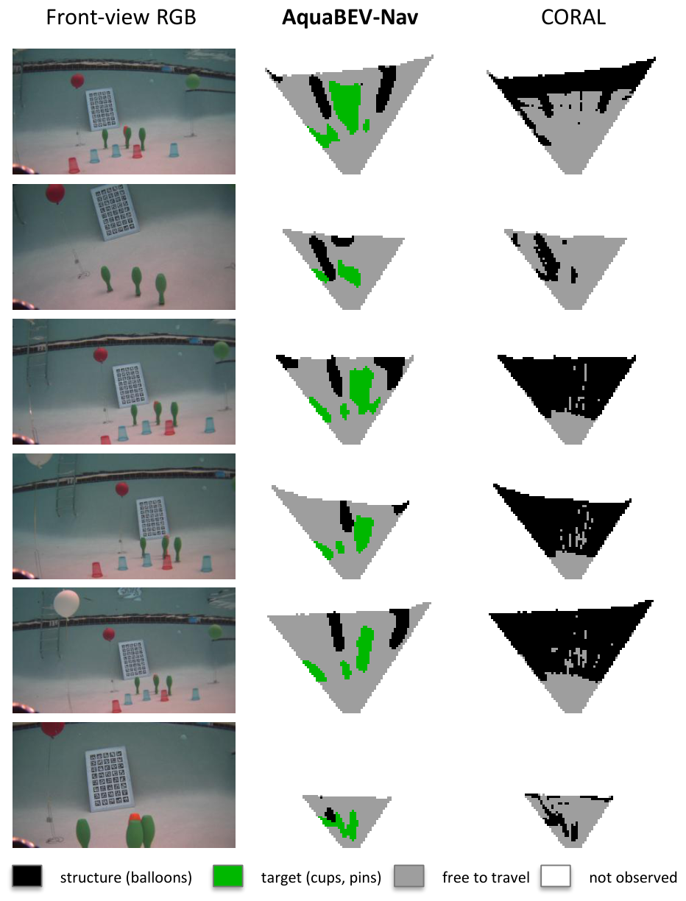
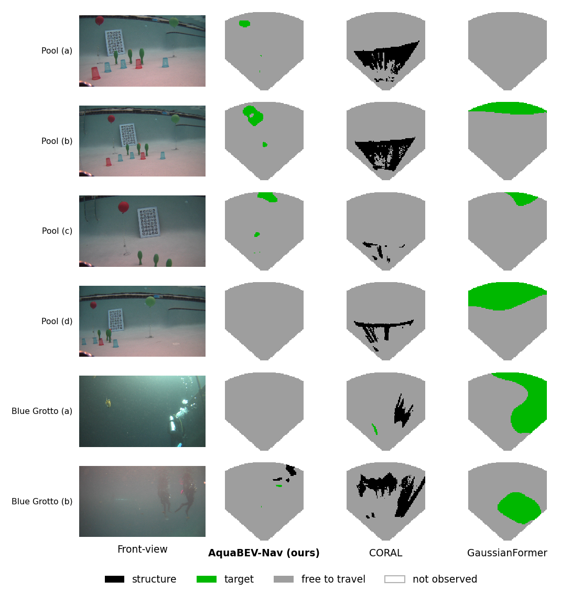

Trung Tien Dong
Trung Tien DongAquaBEV-Nav: Learned BEV Occupancy for Underwater Navigation and Exploration
1ERA Lab, University of South Florida · 2YES Lab, University of South Florida · 3University of Maryland, College Park
*Equal contribution · Also presented as a poster at the WPNMR Workshop @ IROS 2026

Abstract
Safe underwater exploration requires a robot to understand where surrounding structures are located and which regions are available for motion. Existing vision-based underwater exploration systems commonly obtain this information indirectly by estimating monocular depth, unprojecting the geometry into 3D space, and accumulating it into a 2D bird's-eye-view occupancy map. This reliance on intermediate depth estimation is particularly problematic underwater, where scattering and wavelength-dependent attenuation degrade visual cues and limit the reliability of monocular depth estimates.
We introduce AquaBEV-Nav, an underwater exploration framework that bypasses explicit monocular depth estimation through direct bird's-eye-view occupancy prediction. Built upon the CORAL hierarchical exploration framework, AquaBEV-Nav replaces its depth-based perception front end with AquaBEV. Given a single RGB frame, AquaBEV maps visual features into a learned polar representation, performs causal reasoning along the range dimension, and reconstructs local Cartesian occupancy without relying on intermediate depth prediction. The resulting occupancy map is accumulated into CORAL's persistent spatial memory, providing spatial context for VLM-based high-level planning and collision constraints for dynamics-aware local trajectory generation. Across ten simulated reef environments and six occupancy backbones evaluated under a single protocol, AquaBEV-Nav reaches 37.48 structure IoU and 53.2 target IoU, 88.95% closed-loop coverage with zero collisions.
Video
Contributions
- We introduce AquaBEV-Nav, which connects monocular BEV occupancy directly to hierarchical underwater navigation.
- We develop spatially calibrated BEV objectives derived from the observed navigation-relevant error structure, improving the planning representation without increasing model parameter count.
- We conduct a controlled evaluation across six occupancy backbones in simulation and physical pool experiments to study how occupancy prediction quality translates into downstream navigation performance.
Method

The AquaBEV trunk (image encoder → cross-view transformer to polar features → causal range decoder) feeds separable heads for structure (obstacles) and target (e.g. objects of interest) fields. Training-only objectives — radial transport along each azimuth ray, a distance-weighted false-positive penalty, and target transport — shape these fields for planning without adding parameters. Per-frame predictions are fused into CORAL's persistent map, where a VLM high-level planner proposes waypoints and a dynamics-aware low-level planner generates collision-free trajectories.
Results




BibTeX
@misc{dong2026aquabevnav,
title = {AquaBEV-Nav: Learned BEV Occupancy for Underwater Navigation and Exploration},
author = {Trung Tien Dong and Zhenqi Wu and Sahasra Kondapalli and Jiayi Wu and Yi Sheng and Xiaomin Lin},
year = {2026},
eprint = {2609.32156},
archivePrefix = {arXiv},
primaryClass = {cs.RO},
url = {https://arxiv.org/abs/2609.32156}
}